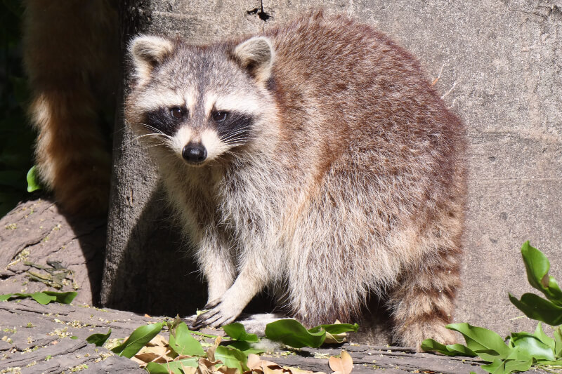

Mapaches
Acerca de
Contactanos
Los mapaches

Previous
Next
Caracteristicas fisicas
• Peso y tamaño:
Miden entre 60 y 95 centímetros de largo (incluyendo la cola) y pesan de 5 a 14 kilogramos.
• Apariencia:
Tienen pelaje grisáceo o pardo, hocico puntiagudo y una distintiva máscara de pelo negro alrededor de los ojos.
• Destreza:
Poseen patas delanteras muy sensibles y ágiles que usan casi como manos para abrir puertas, agarrar objetos y buscar comida.
Hábitat y Comportamiento
• Costumbres:
Son animales principalmente nocturnos y solitarios, muy buenos trepadores de árboles.
• Distribución:
Viven en bosques templados, zonas húmedas y cerca de fuentes de agua. Se adaptan con facilidad a entornos urbanos.
• Inteligencia:
Son considerados criaturas muy astutas, curiosas y oportunistas.
Para saber mas sobre Mapaches ve este documental